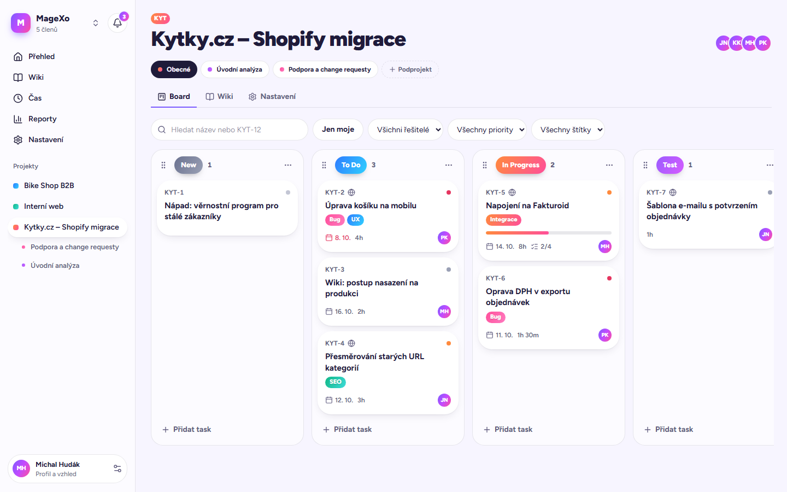
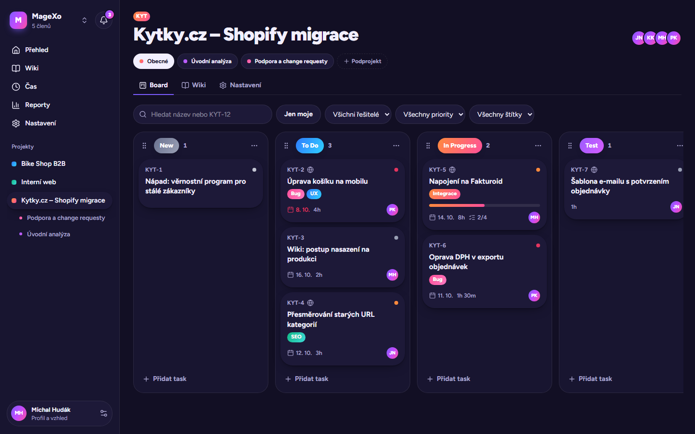

Taskhub: jedno místo pro tasky, wiki, výkazy času a klienty
Taskhub je pro tým, který pracuje pro zákazníky. Kanban jako v Jiře, dokumentace jako v Confluence, výkazy jako v Tempu. Zákazník se připojí jako host a vidí jen to, co mu ukážete.
- Ve vývoji
- Vlastní instalace
- Čeština i angličtina
- Data týmů oddělená


Skutečná obrazovka z aplikace
Vyzkoušejte si to
Přetáhněte kartu do Done
Takhle se v Taskhubu pracuje s tasky. Kartu chytněte myší, na mobilu podržte prstem, nebo použijte šipku na kartě.
Co umí
Všechno, co tým potřebuje
Funkce podle modulů. Stav odpovídá roadmapě níže.
Jak to vypadá
Projděte si rozhraní
Skutečné screenshoty z aplikace, u obrazovek z prototypu je to uvedeno.
Všechny screenshoty
Roadmapa
Kde je vývoj
Každý milník končí testy a commitem.
Novinky
Co je nového
Co přibylo s každou verzí, nejnovější nahoře. Celý přehled je v souboru
CHANGELOG.md
v repozitáři.
Instalace
Rozjeto za deset minut
Lokální vývoj, přihlášení, e-maily i nasazení. Repozitář je zatím soukromý.
-
Připravte nástroje
Node 24, pnpm, Git a Docker Desktop (lokální Supabase běží v Dockeru). Docker Desktop musí běžet.
node -v # v24.x pnpm -v docker info -
Naklonujte repozitář a nainstalujte závislosti
git clone https://github.com/mhudakcz/taskhub.git cd taskhub pnpm install -
Spusťte lokální Supabase
Na konci výpisu jsou URL a klíče, budete je potřebovat v dalším kroku.
pnpm db:start -
Vytvořte
.env.localZkopírujte šablonu a doplňte
NEXT_PUBLIC_SUPABASE_URL,NEXT_PUBLIC_SUPABASE_ANON_KEYaSUPABASE_SERVICE_ROLE_KEYz výpisusupabase status. Soubor se necommituje.cp .env.example .env.local pnpm exec supabase status -
Vygenerujte typy databáze
pnpm db:types -
Spusťte aplikaci
pnpm dev- Aplikace
- http://localhost:3000
- Supabase Studio
- http://127.0.0.1:54323
- Mailpit (přihlašovací e-maily)
- http://127.0.0.1:54324
Lokální databáze obsahuje demo workspace
magexo. Přihlaste se e-mailemmichal@taskhub.test(vlastník),jana@taskhub.test(admin),petr@taskhub.test(člen) neboklient@taskhub.test(host). Odkaz pro přihlášení najdete v Mailpitu. -
Spusťte testy
pnpm test # unit testy pnpm db:test # RLS testy databáze pnpm test:e2e # end-to-end testy v prohlížeči
Google přihlášení
- V Google Cloud Console založte OAuth client typu „Web application“.
-
Jako authorized redirect URI zadejte pro lokální vývoj
http://127.0.0.1:54321/auth/v1/callback. V produkci je to stejná cesta na URL vašeho Supabase projektu. -
Client ID a secret vložte do
.env.locala restartujte Supabase.
SUPABASE_AUTH_EXTERNAL_GOOGLE_CLIENT_ID=
SUPABASE_AUTH_EXTERNAL_GOOGLE_SECRET=E-maily
Lokálně se přihlašovací e-maily zachytí v Mailpitu, nic se neodesílá. Pozvánky a notifikace posílá Resend: vytvořte API klíč v Resendu a doplňte ho.
RESEND_API_KEY=
Produkce: aplikace na Cloudflare Workers, data v Supabase Cloud, soubory v Cloudflare
R2, e-maily přes Resend. Po nastavení nasazuje GitHub Actions každý push do
main.
-
Supabase Cloud: databáze a přihlášení
Založte projekt v regionu Frankfurt a nahrajte migrace (demo data se do produkce nenahrávají). V Authentication nastavte Site URL a Redirect URLs na vaši doménu a vlastní SMTP přes Resend.
pnpm exec supabase login pnpm exec supabase link --project-ref <project-ref> pnpm exec supabase db push # Authentication → URL Configuration Site URL: https://taskhub.example.cz Redirect URLs: https://taskhub.example.cz/** # Authentication → SMTP: smtp.resend.com, port 465, user "resend", password = Resend API key -
Cloudflare R2: přílohy a obrázky
Vytvořte soukromý bucket
taskhub, API token s oprávněním Object Read & Write a CORS pravidlo, aby prohlížeč mohl nahrávat přímo do R2.[ { "AllowedOrigins": ["https://taskhub.example.cz"], "AllowedMethods": ["PUT", "GET"], "AllowedHeaders": ["content-type"], "MaxAgeSeconds": 3600 } ] -
Resend: e-maily
Přidejte doménu, do DNS doplňte záznamy SPF a DKIM a vytvořte API klíč. Stejný klíč slouží jako SMTP heslo pro přihlašovací e-maily Supabase.
-
Cloudflare Workers: tajné hodnoty
Serverové klíče patří jen na Worker, nikdy do repozitáře. Po prvním nasazení přidejte vlastní doménu (Settings → Domains & Routes), HTTPS se nastaví samo.
pnpm exec wrangler secret put SUPABASE_SERVICE_ROLE_KEY pnpm exec wrangler secret put R2_ACCOUNT_ID pnpm exec wrangler secret put R2_ACCESS_KEY_ID pnpm exec wrangler secret put R2_SECRET_ACCESS_KEY pnpm exec wrangler secret put R2_BUCKET # taskhub pnpm exec wrangler secret put RESEND_API_KEY pnpm exec wrangler secret put EMAIL_FROM # Taskhub <taskhub@example.cz> pnpm exec wrangler secret put APP_URL # https://taskhub.example.cz -
GitHub Actions: automatické nasazení
V Settings → Secrets and variables → Actions doplňte hodnoty níže. Každý push do
mainpak projde testy, nahraje migrace a nasadí aplikaci i tento web. Když testy selžou, nic se nenasadí.# Secrets CLOUDFLARE_API_TOKEN # template "Edit Cloudflare Workers" (+ Pages: Edit) CLOUDFLARE_ACCOUNT_ID NEXT_PUBLIC_SUPABASE_URL NEXT_PUBLIC_SUPABASE_ANON_KEY SUPABASE_ACCESS_TOKEN # for migrations SUPABASE_DB_PASSWORD # Variables SUPABASE_PROJECT_REF=<project-ref> DEPLOY_ENABLED=true SITE_DEPLOY_ENABLED=true -
Kontrola po nasazení
Přihlaste se e-mailem, založte workspace, nahrajte přílohu (ověří R2 a CORS) a zapište čas. Živé logy a návrat na předchozí verzi:
pnpm exec wrangler tail pnpm exec wrangler rollback -
Provoz: dostupnost a zálohy
Supabase Free uspí projekt po 7 dnech bez aktivity. Cron Workeru proto každé 2 minuty rozesílá notifikace a zároveň „pingne“ databázi. Doporučený monitor (např. UptimeRobot) hlídá
/api/healtha workflowbackup.ymlukládá každý týden zálohu do R2.curl https://taskhub.example.cz/api/health # {"ok":true,"db":"ok","ms":42}
Alternativa: vlastní server
Taskhub nepoužívá nic specifického pro jednoho hostingového poskytovatele, takže běží i jako běžná Node.js aplikace na VPS nebo firemním serveru. Databáze a soubory zůstávají v Supabase a R2 (nebo jiném S3), HTTPS zajistí reverzní proxy, třeba Caddy.
pnpm install --frozen-lockfile
cp .env.example .env.production.local # fill in all values
pnpm exec supabase db push
pnpm build
pnpm start -p 3000
# /etc/caddy/Caddyfile
taskhub.example.cz {
reverse_proxy localhost:3000
}
Podrobný návod krok za krokem je v repozitáři v souboru
docs/deployment.md.
Tipy pro Windows
-
Pokud cesta k profilu obsahuje diakritiku,
next-intl(přes@swc/core) neumí načíst nativní binárku. Nasměrujte cache na krátkou cestu bez diakritiky; složka musí existovat. -
Build přes OpenNext (
pnpm cf:build,cf:preview,cf:deploy) na Windows nativně nefunguje. Spouští se v CI nebo ve WSL. Podrobnosti jsou v README repozitáře.
SWC_NATIVE_BINDING_CACHE=C:\Users\MICHAL~1\.swc-cacheTechnologie
Postaveno na ověřených základech
- Aplikace
- Next.js 16 (App Router), TypeScript, Server Actions
- UI
- Tailwind CSS 4, shadcn/ui, lucide-react, dnd-kit
- Data a přihlášení
- Supabase: Postgres, Auth, Row Level Security
- Soubory
- Cloudflare R2, presigned URL
- Wiki editor
- BlockNote
- Jazyky
- next-intl (cs, en)
- Formuláře
- Zod, React Hook Form
- E-maily
- Resend, React Email
- Hosting
- Cloudflare Workers přes OpenNext
- Testy a CI
- Vitest, Playwright, GitHub Actions
Taskhub roste každý týden
Sledujte novinky, nebo si ho rovnou rozjeďte u sebe.